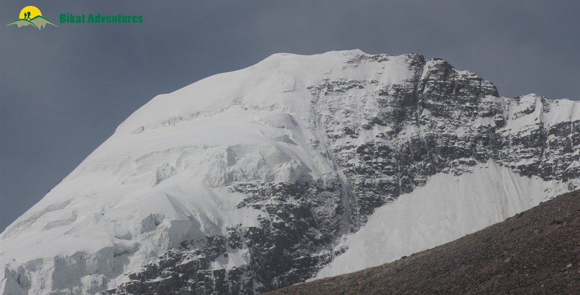

Kang Yatse I Peak Expedition
The Toughest Expedition in Markha Valley - Meant for Experienced Climbers
Available Batches
Available Batches

Brief Description


Brief Itinerary
8 Km
4 Hours
3546m
Detailed Itinerary
Day 1
Arrive in Leh (3,500 M)
The trek starts from Leh, which is a headway into Ladakh that is home to some of the highest peaks in the region. It is also a very popular tourist destination and hence fairly accessible. If you need guidance on how to get to this high-altitude hub of mountaineering, this article (Travel options from around Leh) might be useful.
Day one is reserved for the climbers to make their way to Leh and get settled into their accommodation. Since climbers will be coming to this altitude from sea level, the body will need time to get comfortable with the mountain air.
Day 2
Rest and Acclimatization in Leh (3,500M)
Day two is reserved for rest and acclimatization to the altitude, too. This is important to allow your body to adapt to its new environment and reduce chances of adverse health conditions. You can go around and explore the city market, delve into the colors and culture of this high-mountain city and visit some places nearby. A little movement around the city would be good for acclimatization. Also, use this time to go through your checklist and do some last-minute shopping for what you might be missing for the expedition. Leh has the best market for trekking essentials.
While the body acclimatizes, we take this time to get together with the group for a debriefing session where we get to know each other better and delve into the happenings of the next few days - schedule, what to expect, basic do's and don'ts in the mountains, how to maintain the sanctity of the environment and other such matters of importance.
Day 3
Leh (3,500M) to Skiu (3,500M)
Distance: 35 kms
Time Taken: 3 hour drive
The drive from Leh to Skiu is the perfect introduction to the general terrain we are about to enter for the next few days. We assemble and leave for the day between 10:30 AM and 11:00 AM so that we can make it to the campsite, set up our tents and have hot lunch as we settle into this new environment. The drive is smooth. The road goes through a flat and desolate plain alongside river Indus until we reach its confluence with the distinctly coloured Zanskar River, in close to an hour and a half. In this short drive, we witness barren mountains of all shapes, forms and textures – slabs of rock stacked one on top of the other neatly, chunks of rock resting on each other haphazardly, sheets of rock hard-pressed into each other, loose rocks, mountains made of mud, and much more. The entire set up looks like an experimental playfield of forms for the creator where He dumped all the discarded versions of His clay models.
After coming through some of the driest areas you will witness, we reach the campsite by lunch time. This is amongst the many scattered and tiny hamlets spread out in the area which makes it a little green for all the fields of the locals. The freshness of vegetation is a sight for sore eyes.
Once we set up camp and are finished with lunch, we go for a little acclimatization walk in the early evening. This is extremely important as it’s a new terrain and the body needs time to adapt to new conditions. Remember to carry a bottle of water everywhere you go. It won’t be long before you realize the weather here is peculiar – extremely hot, extremely dry and extremely arid. The heat turns you into a crisp and your throat is likely to feel dry. This, however, is normal. Give your body some time to recalibrate.
Day 4
Skiu (3,500M) to Sara (3,500M)
Distance: 11 km
Time Taken: 6 hours
The first thing you would have noticed on entering Ladakh is that it is extremely dry – your throat is likely to feel scratchy and your face burnt from all the unobstructed heat that the land receives all day under the harsh sun. Marka valley is a long extension of this parched feeling. Imagine walking in the harsh sun on wide, open lands with no respite from the heat, surrounded by mountains that look like they could come crumbling down at any point; they just aren’t doing it out of the goodness of their hearts! This is Markha valley trek – a civilization of mud, heat and insurmountable beauty of a peculiar kind.
It is a long day so we start as early as possible. Right after an early yoga session and breakfast, we pack up our tents and get moving towards Markha Village by 08:30 AM. Mornings, in this terrain tend to get a little chilly; don’t forget to layer up accordingly. The trail today is easy and mostly straight with a few sections of ascent. The pointed rocky peaks, the poplar trees, and the muddy trail, they seem like a constant picture through which we walk for 5 days to get to the camp of Kang Yatse I – quiet and still. The river shining silver in the bright, harsh sun is the only thing that mimics movement in this otherwise static landscape – snaking through the bed of the valley in gushing streams. Two and a half hours into the trek, we cross a small wooden bridge over the aggressively flowing murky stream. And within an hour from then, we reach Sara, which is our destination for the day. The trail is mostly dirt roads and the rocky sea bed.
Day 5
Sara (3,500M) to Umlung (3,901M). (Click to View GPS data)
Distance: 15 km
Time Taken: 6-7 hours
Distance: 15 km
Time Taken: 6-7 hours
We continue on the trail from yesterday, onwards to Umlung via Markha Village which, with upwards of 40 households, is the largest village in the valley. The trail gradually ascends 300M across 10 km, so it is not a heavy day. The terrain also remains the same as yesterday and hence is easier to cover because of familiarity with the topography. We reach the campsite in time for a hot lunch. After setting up our camps in this campsite in the midst of the tall green grass with a backdrop of barren mountains, we go for an acclimatization walk in the evening. The rest of the day is to explore the setting and rest our weary selves.
Day 6
Umlung (3,901M) to Thochungtsey (4,298M). (Click to View GPS data)
Distance: 8.5 kms
Time Taken: 5 hours trek
Distance: 8.5 kms
Time Taken: 5 hours trek
Today we are covering as much ground as we did yesterday. The terrain remains fairly the same, with long patches of even land with a few ascents and descents along the way. Just like Day 4, we start today as early as 08:30 in the morning. Within an hour into the trek, we reach our first river crossing. The water levels here are extremely unpredictable. Depending on the level of the water, you will either find yourself wading through waist deep current or cross the stream in a hop, skip and jump.
Within an hour of crossing the river we reach Tacha Gompa – a monastery high up on a steep incline, precariously standing dressed in mud on top of a muddy mountain. In another hour we climb a small patch of steady incline leading to a small village canteen where we get some refreshments and well-earned rest. Our campsite for the day is a two hour trek from here. One hour into the trek, we start seeing Lower Hunkar. It is a clearing where large bushes end and the landscape opens up to views of mountains disappearing into each other. This is when you start climbing a little farther up from the river bed. While the trail misses an uneven terrain which can get monotonous at times, but constantly dipping your feet in icy water has a way of jolting you back to attention.
We set up our tents in the middle of wheat fields. Far away villages with houses lined far apart stand guard around the tents, in the background.
There is a lot to explore around Thochungtsey on our acclimatization walk later in the day. This is one walk you won’t complain about!
Day 7
Thochungtsey (4,298M) to Kang Yatse Base Camp ( 5,100M). (Click to View GPS data)
Distance: 8-9 kms
Time: 6-7 hours
Distance: 8-9 kms
Time: 6-7 hours
Sitting in the heart of a chilly morning, the sunlight inching towards you is one of the best sights - to see it slowly crawl to you like it is teasing you!
We are gaining quite a bit of altitude today and there is also a lot of ground to cover, so we start as early as our previous days.
We pack up our tents and leave the campsite by 08:30 AM. Fifteen minutes of sharp ascent and a 100M altitude gain later, we will reach Upper Hunkar – a small hamlet with houses nestled right in the middle of bright green fields bordered with flowers. Every village in this valley is adorned with prayer flags which add to the colour palette of the otherwise dichromatic color scheme. Also, you will find religious boulders called Mani stones in every village and on the trail between the many villages. These are stone plates and rocks inscribed with Buddhist mantras adding to the inimitable vibe of the valley. Mani stones are placed alongside the roads and rivers or sometimes placed together to form a mound as an offering to the spirits of the place. The beliefs of the locals dictate that these structures be crossed from the left as a continuation of their belief of the universe revolving in a clockwise direction forming circular patterns which are seen as a repetitive pattern in all Buddhist customs.
The fields in every village form peculiar geometric patterns adding to the atypical aesthetic of the place. We circle around the village of Upper Hunkar to get to the other side and then turn left into the valley towards the side you start to see Kang Yatse. We continue alongside the river on rocks and boulders. In an hour’s time, we leave the river’s side and make a steep ascend on a muddy mountain. The peaks in this region look like cardboard mountains, sturdy but bent in places in strange ways ready to crumble on one harsh blow. Nothing in the valley is in any hurry except that one lost cloud in the otherwise blue sky which is trying to go places. Yellow and pink flowers add to the chiaroscuro as every blind turn revels a different view holding new secrets waiting to be uncovered.
Within half an hour of the ascent, we reach a small patch of descent taking us to a bridge to be crossed over to the other side of the river. Our resting point is a desolate campsite at 4,195M where we fill water from a fresh water spring and lay down for a bit in the abandoned stone structures. We have now left the river behind. From here on, we start on a continuous but gradual ascend all the way up to Twin Lake. It will take us three hours to get there from our resting point. Twin Lake provides for the best views of Kang Yatse I as well as Kang Yatse II. The lake itself is embellished with prayer flags and a Buddhist statue bang in the middle of the quiescent water of the lake. There is a small enclosure used as a place of worship, right next to the lake.
The route from the lake splits into two – one descending down towards Nimaling and one which takes you to the base camp of Kang Yatse I. We make a right here and head towards the Base Camp. It should take us close to two hours to make it to the base camp. We set up our camps here and call it a day.
Day 8
Rest and Acclimatization at Basecamp (5,100M)
Today is reserved for acclimatization to the altitude since we gained quite a bit of height the previous day and have also entered a much different terrain. We use this time to distribute equipment and gears required for the climb and also to practice basic techniques we will require on our summit push tonight. After a late breakfast and equipment disbursement, we go to a nearby slope for training and to get comfortable with our equipment - snow boots, ice axes and crampons. We will learn techniques and calls of roping up and ascending and descending on a snowy terrain. We also learn to use ice axe to facilitate our climb and for safety on such a crevasse-ridden terrain.
Day 9
Base Camp (5,100M) to Advanced Base Camp (5,425M) to Base Camp (5,100M)
Distance: 5-6 km
Time Taken: 6-7 hours
Distance: 5-6 km
Time Taken: 6-7 hours
Given that high-altitude climbs demand a rigorous acclimatization routine, expeditions usually employ the method of making rotation rounds between camps so as to better adapt to the environment. Living the tenet of ‘climb high, sleep low’ which is a golden rule for survival in that altitude, we make multiple rounds between campsites. We will carry our load and make our way to the Advanced Base Camp. We climb back down to base camp for the night. The climb up to Advanced Base Camp is not tough but takes you through precarious sections of scree and over glaciers.
Day 10
Base Camp (5,100M) to Advanced Base Camp (5,425M).
Today we will occupy the Advance Base Camp which will help us in setting the route further as it will be long rope fixing day. Overnight stay in camps.
Day 11
Advance Base Camp (5,425M) to Summit Camp (5,700M)
Summit Camp serves as a launching pad for the final summit push as it helps in better acclimatization & increases the chances of summit success.
Day 12
Summit Camp (5,700M) to KY-I Summit (6,400M) to Base Camp (5,100M).
Today is THE day. We leave the warmth of our tents and start towards the summit around midnight. The route from the Summit Camp starts to get technical. It launches you straight onto steep slopes of a high gradient. Depending on the snow at the time, it might require fixing of ropes to traverse. The climb involves navigating steep sections, ice walls and knife ridges with a steep drop on both sides. The last 500M to the summit are the trickiest and require climbing an almost vertical ice wall with the use of fixed ropes. The summit provides for some exceptional views of the mountain ranges around.
After we savor the moment of having made it to the top, we start to make the equally long descend down towards base camp. It is going to be a long and demanding day which needs caution, both while going up and coming back down.
Day 13
Reserve Day
In case of bad weather or other difficulties, Day 13 is reserved for a second summit attempt. This will only get used if unexpected and unforeseeable conditions present themselves at the last minute preventing the first summit push.
Day 14
Base Camp (5,100M) to Chokdo (3,900M) via Kongmaru La (5,200M) to Leh.
Distance: 16 km
Time Taken: 8 hours trek + 3 hour drive
Distance: 16 km
Time Taken: 8 hours trek + 3 hour drive
After a short and easy day yesterday, we have a lot of ground to cover to get to Chokdo – our road head from where we drive to Leh.
From Base Camp we start to climb the mountain on the opposite side. The sun blushes all shades of red, from pastel to a bright orange as the clouds run amuck in all directions. The sunlight makes the snow on the peaks shine like wildfire adding to the drama of the landscape. The river flows urgently from the meadows towards the mountains as the many animals, in their morning glory, romance the land below. There are no dangerous patches on this day but the distance and the dry terrain make it a rough undertaking.
The climb up to Kongmaru La pass is a few patches of steep incline between long distances of flat land rich in pikus and marmots. We reach the base of the pass from the base of the mountain in 3.5 hours after which there is a steep incline for half an hour to get on top of the pass. The pass provides for magnificent views of Kang Yatse 1 and 2 and also Dzo Jongo. Adorned with prayer flags, the wind on the pass is fierce. Locals climb here very frequently to make phone calls – this place receives high speed internet and a strong phone network which you lose 5 steps on either side of the pass. It is close to 2 kms from Nimaling to this place.
From the pass, it is only descent on a narrow trail, through gorges and water crossings with the valley appearing and disappearing on every turn. The terrain is interesting in its colours with rocks across the colour palette, geological formations with massive walls standing vertically on either side of you and the gush of water filling up these narrow passageways to the strangest and most interesting fauna you will ever see. It is 3.5 hours of up, down, sideway and any other direction you can think of to cross this section to get to the end point of Chokdo from where we begin our 3 hour drive to Leh.
Expect to reach Leh by late evening.
Day 15
Departure from Leh
The trek ends here but not before some celebration. How can we end this adventure without a summit party?
If you plan to stay for a few more days to explore the wonders of Ladakh, the article below might help start you off on what places to consider. (Places to visit in Leh Ladakh)
Like we indicated before, the weather on high-altitude is unpredictable as are many other conditions. We would suggest you keep spare days between the end of the expedition and your travel arrangements to head back home.
What's Included
- Guest House Stays in Leh (Day 1,2 and 12)
- Trek Meals (Starting Lunch on Day 3)
- Transport from Leh to Road head and return
- Forest Permits/Camping Charges (upto the amount charged for Indian nationals)
- 4 season Dome Tents, Thermal rated Sleeping bags, Sleeping mats
- Safety Equipment includes static rescue rope, seat harness, carabiners, pulleys
- Expedition guide, cook, helpers, HAP and LAP for carrying common supplies
- Course certified & experienced Expedition Leader with Wilderness Emergency Responder & Rescue. course from NIM Uttarkashi
- Technical Equipment - PP Ropes, Helmet, Ice Axe, Crampons, Mountaineering Boots, Snow Stake, Dead Man/Boy
What's Not Included
- Meals in Leh
- Meals during road journeys
- Portage of personal bags during the expedition
- Cost of any kind of Travel Insurance.
- Expedition Permit Fee of INR 5000 approx per member for foreign nationals & INR 1000 per member for Indian Nationals.
- Any kind of personal expenses
- Inner Line Permit Fee of INR 700 per participant
- Outdoor Insurance is mandatory for all participants
Are you Eligible for this Adventure?

BRS Level Required
This makes it mandatory for you to have high-altitude experience of preferably multiple treks marked at level 5 on the BRS. The altitude, the terrain and the nature of the climb demand a certain level of skill and a need for you to be aware of how your body reacts to the various features of high altitude environment.
If you do not know what level of BRS trek would suit you best, worry not! Fill out this Form:

we will send you a progression chart to help you comfortably get out of your comfort zone in order to level up and ultimately reach your highest potential in the big, bad world of outdoor adventure.
Packing List
This is a list of essential items for individuals doing the trek with Bikat Adventures. This list contains only those items which the participants are required to bring with them. The list excludes those items which are provided by Bikat Adventures on the trek. We have divided the items into five categories. All the items in the list are essential except for those marked as optional.
Trekking Gear
- Ruck sack bag with rain cover. Qty -1
- Day Pack Bag - Recommended for treks with summit day
- Head Torch with spare Batteries. Qty -1
- U V protection sunglasses. Qty -1 Here is how you can choose the best sunglasses for trekking.
- Water Bottles: 2 bottles of 1 liter each
Footwear
- Non-skid, deep treaded, high-ankle trekking shoes Qty -1
- Pair of light weight Slipper/Sandals Qty -1
Clothing
- Quick Dry Warm lower or Track Pants. Qty - 2
- Full sleeves T-shirts/ Sweatshirts. 1 for every 2 days of trekking
- Pair of thick woolen socks. 1 pair for every two days of trekking
- Thermal Body warmer Upper & Lower. Qty-1
- Undergarments. Qty - 1 for every day of trekking
- Warm jacket closed at wrist & neck .Qty-1
- Full sleeves sweater. Qty -1
- Rain wear ( Jacket & Pants ) . Qty-1
- Pair of waterproof, warm gloves. Qty-1
- Woolen cap. Qty-1
- Sun shielding Hat. Qty -1
Toiletries
- Personal toiletries kit (Small Towel, Toilet paper, paper soap, Bar soap, toothbrush, toothpaste, cold cream, etc.)
- Sun screen lotion small pack. Qty -1 Here is your Sun Protection 101 to stay safe in the bright sunny outdoors.
- Lip Balm small pack. Qty-1
Utensils
- Small size, Light weight & Leak proof lunch box. Qty-1
- Plate. Qty- 1
- Spoon.Qty-1
- Tea/Coffee (plastic) Mug.Qty-1
Miscellaneous
- Camera (Optional)
- Carry your medicines in plenty in case you have any specific ailment. Consult your doctor before joining the trek.
- Dry fruits, Nuts, Chocolate bars (Optional)
Frequently Asked Questions
Kang Yatse I Peak is only for experienced trekkers who have done at least one BRS 6 trek or equivalent.
If you can Jog/Run for 5 kms in 25-30 mins, you are ready to take on this trek. Once a week, you can practice running 10 kms in an hour or so to improve your endurance further. In addition to this, you can also add resistance workouts to your schedule like squats, lunges, push ups etc.
If you cannot do the above, there’s no need to worry. It is important to remember that it’s all about practice. Get on a training schedule and we can assure you that you will meet these standards in a matter of a few months.
The climb demands a few basic mountaineering skills; using an ice-axe, pitching a tent in snow, roping up, working together as a team, ascending and descending on steep gradients, gear assisted ascent as well as abseiling, climbing techniques and using technical mountaineering equipment.
The minimum age limit is 16 years. However, minors between 16 to 17 years of age should be accompanied by their parents/ guardians. If you are above the age of 60, kindly carry a medical certificate from your doctor that deems you fit for adventure activities like trekking.
The Kang Yatse I Peak is located in the Ladakh region of Jammu and Kashmir.
Standing at an impressive elevation of 6,400 M, its snow-capped summit offers panoramic views of the surrounding Himalayan range, including the Karakoram and Zanskar ranges. Climbing Kang Yatse I is a thrilling challenge that requires technical mountaineering skills, navigating steep slopes and icy sections. Along the trekking routes, trekkers can also immerse themselves in the rich Ladakhi culture, encountering traditional villages and experiencing the warm hospitality of the locals. The journey to the peak unveils breathtaking landscapes, from high-altitude plateaus to alpine meadows, providing a truly unforgettable connection with nature. Kang Yatse I Peak is a captivating destination for adventurers seeking an exhilarating climb amidst the beauty of Ladakh.
The trek to the summit of Kang Yatse I Peak is a challenging expedition that takes you through a variety of terrain, including forests, meadows, and glaciers. It should only be attempted by experienced trekkers with a know-how of basic mountain skills and prior experience in high altitudes.
The best months to undertake the Kang Yatse I expedition are July through September.
On the trek we have twin-sharing tents. On higher camps, due to lack of space to pitch tents, the tents will be on a 4 person sharing basis. The tents used on higher camps are much more spacious and sturdy with ample space.
In July, which falls during the summer season in the region, the temperatures on Kang Yatse I Peak can range from around 10°C to 20°C during the daytime at lower altitudes. As you ascend higher, especially during the nights and early mornings, the temperatures can drop considerably, reaching below-freezing levels. At higher altitudes, temperatures can range from around 0°C to 10°C or even lower.
During August, the daytime temperatures on Kang Yatse I Peak can range from around 10°C to 20°C at lower altitudes.
During September, the temperatures on Kang Yatse I Peak can start to drop gradually. Daytime temperatures can vary between around 5°C and 15°C at lower altitudes.
Kang Yatse I is meant for experienced mountaineers with technical knowledge, looking for a challenge. The expedition calls for some specific skills of ice and snow climbing, and excellent physical fitness in addition to high levels of stamina. With a steep summit climb, moraines, crevasses, technical boulder sections and a steep couloir that demands extreme fitness and endurance, the expedition requires the use of technical mountaineering equipment and skills suited for its terrain.
The trek starts from Leh, which is a headway into Ladakh which is home to some of the highest peaks in the region. It is also a very popular tourist destination and hence easily accessible.
BSNL has the best connectivity in Leh-Ladakh region followed by Airtel. However, all the mobile networks like Idea and Vodafone also work in Leh. Please note that only postpaid numbers work in J&K state, prepaid connections will cease to work as soon as you enter Ladakh region. On & Off network coverage is available throughout this trek (BSNL & Airtel mostly).
You will find plenty of ATMs in Leh.
Kang Yatse I Peak is a Leh to Leh trip. You’ll have to arrive in Leh on your own. Pick up for the start of the trek will be from the hotel in Leh.
Expect to reach Leh by late evening. We stay the night at Leh. Kindly plan your departure early the next day.
There are many enchanting places to visit in Leh-Ladakh. During your acclimatization period, you can roam around the town and visit the monasteries; Diskit Gompa, and Lamayuru Monastery. Drive up to the Magnetic Hill and experience the magnetic phenomenon on the hill. The picturesque Nubra Valley will take your breath away. The green oasis villages, the monasteries, the ruined palaces- Turtuk and Bordang; there is a whole different culture in this place. It is 150 km away from Leh. You can take a shared taxi to this route. How can you leave Ladakh without seeing Pangong Lake, the sapphire blue lake? Also, visit Gurdwara Pathar Sahib and Leh Royal Palace. For more information on top tourist attractions in and around Leh, read, Places You Can Visit in Leh Ladakh .
We don’t provide rental facilities in Leh currently.
We don’t provide rental facilities in Leh currently.
We don’t provide rental facilities in Leh currently.
We don’t provide rental facilities in Leh currently.
For a detailed list, check the Packing List section on this page.
You can buy your essentials in Leh. However, do not leave anything for last minute purchase.
Although not recommended, you can off load your bag at an additional cost. Add a request while making your booking for the trek and it can be arranged. Please note that backpack offloading is only available till Base Camp.
(Note: We don’t recommend offloading because the extra resources on a trail - ponies or porters depending on the trail - means extra load on the environment which can easily be avoided. It also goes against the spirit of trekking by eliminating a level of endurance and discomfort from the experience which are factors at the very heart of an outdoor adventure activity.)
(Note: We don’t recommend offloading because the extra resources on a trail - ponies or porters depending on the trail - means extra load on the environment which can easily be avoided. It also goes against the spirit of trekking by eliminating a level of endurance and discomfort from the experience which are factors at the very heart of an outdoor adventure activity.)
You may leave the extra luggage at the hotel in Leh since we come back to the same location upon return.
On all trek days till you are at base camp, we provide 3 full meals (breakfast, lunch & dinner) in addition to evening snacks and tea. The meals are vegetarian and the menu is pre-decided for all days of the trek. We do provide eggs as well on certain days. If you have any specific food-related allergies or restrictions, you can let our local staff (during the trek) know, and your requests will get accommodated. We try to provide a variety of food across meals so as to avoid repetition as well as cover all nutritional needs. On the higher camps only ready to eat meals are provided.
On campsites, our team will dig dry pits and assemble a toilet tent to provide for safe and secure quarters. A shovel will be provided within the toilet tent as well. Using water in the toilet tent is restricted; you will need to carry your own toilet paper. On the more difficult expeditions, toilet tents are not carried to the higher camps (above base camp) due to restriction of space (to pitch the tent).
In case you get your period on the trail and don’t have sanitary napkins, our trek leaders can provide them to you. If you need any other kind of assistance, you can let our trek leaders know. Irrespective of gender, our leaders are gender sensitised and equipped to assist you in any way you need them to.
Our team carries a first aid kit and all the basic medicines required during the trek. They are equipped to be the first responders in case of any injury or health-related issues. For higher expeditions, we also carry a HAPO Bag and oxygen cylinders to tend to any altitude-related health conditions.
You leave the last charging point behind at your hotel in Leh. From here on, we will be camping in the wilderness with no access to electricity.
A copy of your ID Proof and Medical Certificate are the mandatory documents required for this trek. (Soft copies for all of these are to be sent to us & originals should be on your person while on the trek.)
Yes, insurance for any high-altitude activity is highly recommended to cover for the cost of rescue, evacuation and any other emergency service required as well as to cover for medical cost in case of injury or illness during the trek. You can buy it on your own. Alternatively, if you want us to buy it on your behalf, you can mark it as an add-on during the booking of the trek.
Yes, there are multiple permits required for this. We obtain the permits on every trekkers’ behalf. All the permit costs are included in your trek cost.
Yes, you will receive e-certificates (of completion) after the trek. It will bear your name, the trek, and the maximum altitude you achieved on the trek. In case you were unable to finish the trek, you will get a certificate of participation.
On completion of the trek, the certificate will show up on your dashboard on our website. You can download it directly from there.
Kang Yatse I Peak is in India. If you are coming from outside, you will need a visa to enter the country. You should be able to find the rules for obtaining a Visa based on your home country on the internet. This information is easily available.
This does not apply to you if you are an Indian citizen. In case you don’t hold an Indian passport, you will need to check online for Visa application rules based on your home country.
If you are not an Indian citizen, you will need Travel Medical Insurance to travel to the country. Please make sure that your insurance policy is valid for the altitude you are going to and the activity you are undertaking, to cover risks during the trek. The insurance policy provided by Bikat Adventures does not cover foreign nationals. So, please do not purchase it while making the booking from our website.
The Himalayas house the tallest mountains in the world and have long been a treasure trove for all adventure enthusiasts. The variety in terms of beauty, terrain, landscape, geography, culture and opportunity for adventure in the Himalayas, remains undisputedly unmatched.
You can make the booking at any time depending on the availability of slots in our fixed departure batches. You will get this information at the top of this page.
A Basic Mountaineering Course certification from one of the five recognized mountaineering institutes in India is a minimum requirement to join our team. Our field experts are also trained in basic medicine and first-aid response. We also conduct on-ground training for our staff once a year as a refresher for old skills and to learn some new ones. During this training that we call APW (Adventure Professional Workshop), our leaders learn close to 25 topics and techniques of rescue which are not covered in the BMC and AMC courses. For practical training, we simulate on-ground situations to prepare them for quick thinking and quick response during emergencies.
We follow a rigorous regime of hiring and training our experts on the field. Each trek leader is a certified mountaineer with years of experience in the field. The interview process to bring a trek leader on-board is close to 6 months long where we assess various skills as well as personality traits of an individual. They also go through an on-field assignment as part of the hiring process. Trek leaders also progress in time from leading easier treks before advancing to the more difficult ones where the stakes are higher. For detailed information on our selection process, please visit Forerunners - The Making Of A Trek Leader
It absolutely is. We recognize, value and embody the ideology that the world of outdoor adventure can benefit from diversity. We make it our mission to create outdoor spaces as equally accessible and safe for all genders as possible. We also encourage women leaders in the outdoors and all of our staff (irrespective of gender) is gender sensitised. As for accommodation, in case there are no other women on the trek, a solo female trekker is provided with a separate single-occupancy tent.
Our batch sizes for Kang Yatse I Peak are capped at 12 with the trek leader to trekker ratio of 1:2.
In addition to their qualification, our trek leaders are trained to tackle any and all kinds of sudden conditions that may present themselves on ground. During our recce stage, we study the trail in great detail and map out rescue routes before opening it up for our trekkers. We also have local support staff stationed in each area to arrange for emergency services at the place of need as quickly as possible.
We mobilise road rescue efforts where our trek leaders bring the person to be rescued down to the trailhead of the trek from where a car can take them to the nearest healthcare facility. The cost of rescue is not covered in the trek fee that we charge. It must be borne by the participant. However, if you opt for the insurance the cost of rescue operations can be claimed from the Insurance company on production of valid proof e.g. doctor’s prescription & hospital bills etc. Please note that Bikat Adventures is only a facilitator & not a party in the Insurance policy. You need to raise the claim request directly with the Insurance company. Bikat Adventures is not responsible for any rejection of claim. You can call the insurance provider directly for any clarifications related to the Insurance policy. Although not mandatory, we recommend buying the insurance. You don’t necessarily have to get the insurance we provide, you can pick an Insurance company of your choice and get a policy directly from them. If you need more information on the terms and conditions of the insurance policy, get in touch with our customer support team.
All the gear used on our treks and expeditions is tried and tested, maintained for good quality and is overall top notch in quality and condition. We are continually looking to obtain the best of everything there is in the market so as to ensure optimum safety.
That will depend on the nature of your medical condition. Do give us a call, and one of our people will help you understand what is best for you. If not this, we are sure there would be plenty of other options you can choose from our vast portfolio to pick as your next adventure.
We have rolling camps on all our trails. To know why we are strictly against the concept of Fixed Camping, read Reasons to Ban Fixed Camping in Himalayas
This is a complex question and has a compound answer. The simple response is that because it is bad for the environment which we dearly love but if you are interested in a more detailed response to this question, please read Reasons to Ban Fixed Camping in Himalayas
There are a number of measures that we take to prevent overcrowding on some of the most popular trails. Some of them are capping our group size at 15, capping the number of trekkers on a trail to 250 per season, constantly looking for newer trails and routes to spread the crowd around and providing incentives to our trekkers to try unexplored territories with us. We put in place the system of dynamic pricing, which is the first of its kind in the trekking industry, which incentivises trekkers to choose less crowded trails by offering higher discounts. We have noticed, since we started this system, that this has helped in a big way to spread out the crowds between trekking routes. We are also going international so as to relieve some of the stress on the Himalayan landscape as well as explore newer ranges and design newer experiences for our community. If you want a more detailed description of all our measures in this regard, please read Simple solutions to overcrowding on Himalayan Treks
Some basic things to remember are: do not use water, do not dispose of anything non-biodegradable inside the pits, carry your own roll of toilet paper and remember to cover up after yourself to leave a clean toilet for your fellow trekkers. Everything else is much the same like using an Indian style home toilet!
Most wet wipes are not biodegradable which means it could take 100 years or more for them to decompose – not the best thing if you are trying to ‘Leave No Trace’, right?
This is quite a tricky situation but not a hopeless one. Since most of our sanitary waste is not biodegradable, we recommend that you pack your pads/tampons neatly, store it in a zip-lock bag and bring it back down with you where there are better options to dispose of them. In case you do not have zip-lock bags, ask our trek leaders for them and they should be able to provide them to you.
Each trekker is responsible for the use and hygiene of their own eating utensils. And as a measure to maintain proper hygiene, we do not provide plates and spoons. Also, dipping your hands in cold water to wash your own utensils adds something to the overall joy of high-altitude living, wouldn’t you think?
On making the payment, you will receive a booking confirmation along with the packing list and a copy of the undertaking form via email. You will subsequently receive emails detailing documents required, how to prepare physically and mentally for the trek, information on pick-up location on the first day etc. Please add [email protected] in your trusted emails list to make sure our emails don't go to your spam folder.
A Whatsapp group will be formed a few weeks before departure. Members from our team are on those groups as well. Feel free to seek any clarifications you require in regards to the trek, on the group itself. Updates related to transportation/pickup point/pickup timing, accommodation etc. will be shared on the Whatsapp group as well.
Yes, we create a Whatsapp group a few weeks before the departure date so that the flow of information remains smooth and transparent.
Yes, it is one of the mandatory documents you will need to submit before the trek starts. The soft copy is to be sent to us & the original should be on your person while on the trek.
Yes, we will provide you an undertaking form through email which will need to be filled up by you and submitted to us post booking.
Why Bikat?

Small Group Size
Our batch sizes are capped at 15 for smaller treks with the trek leader and trekker ratio of 1:8. This ratio, in our years of experience, has proven to deliver the best trekking experience for individuals as well as groups. Capping the size of the group ensures individual attention to each trekker so that no signs of distress or need during the trek go unnoticed. It also helps to form a more cohesive cohort with better group energy which helps define the rhythm and pace of days on the trek. As you go higher up on the BRS scale, since the stakes are higher, expeditions have an even smaller group size with the ratio of expedition leader to climber set at 1:2.

Qualified Expedition Leaders
We follow a rigorous regime of hiring and training our experts in the field. Each trek leader is a certified mountaineer with years of experience in the field. In addition to their qualification, they also go through practical and situational training to tackle any and all kinds of sudden conditions that may present themselves on the ground. Being unpredictable is the core nature of the mountains but being ready for any circumstance as best as possible is a controllable asset that we try to nurture. Our field experts are also trained in basic medicine and first-aid response. Watch: Forerunners - The Making of A Trek Leader At Bikat Adventures

Guided Progression
Since Bikat Adventures is a learning-based organization, we help you climb up the ladder of difficulty within the sphere of outdoor adventure systematically. Our on-ground training modules are designed to handhold you through the upskilling process so that you are ready to take on bigger challenges.

Equipment Quality and Check
All the gear used on our treks and expeditions is tried and tested, maintained for good quality, and is overall top-notch in quality and condition. We are continually looking to obtain the best of everything there is in the market so as to ensure optimum safety.

Support Systems
Along with the staff you see on-ground, we have a team of superheroes working in the background to give you the best experience possible. Our background team also comprises local staff from each area who know the region best. Having local support helps with studying the area, pre-planning, execution, and in receiving timely support in case of emergencies in these remote locations.

Communication
Our on-field staff is in constant contact with our teams based in primary locations so as to eliminate any avoidable delay in reaching additional help and support when required. We try to use the best tools for communication available, including satellite phones, in regions where they are not restricted.
What our customers Say


Cancellation Policy
Cash refund
Cancellations up to 60 days prior to departure date
Between 60 days to 20 days prior to departure date
Cancellations within 20 days prior to departure date
Voucher refund
Cancellations upto 60 days prior to departure date
Between 60 days upto 20 days prior to departure date
Between 20 days upto 5 days prior to departure date
Less than 5 days prior to departure date
Please Note:
- Cash refund is applicable only in case of bookings made without using any promotional offer code or Cancellation Vouchers or running discounts. "Cash Refund will be processed in 7-14 working days."
- This is only a brief of cancellation terms. For finer details please refer Detailed Cancellation Policy.
Blog Posts

Informative
During a full-fledged season of the Rupin Pass Trek some time ago, Pankaj (one of our founders) received a call about a bizarre situation that had developed on the slopes of the Rupin Pass. The call was from one of our guides who was assisting a batc...
Read full

Informative
Bikat Adventures is one of the few organisations in the country that holds mountaineering expeditions in conjunction with Himalayan treks and other outdoor activities.
This essentially means a Trek Leader joining Bikat Adventures gets the exhilarati...
Read full

Informative
The hiring process for a trek leader at Bikat Adventures is a lengthy one. This is primarily because the roles and responsibilities of a trek leader do not just end with treks. Bikat Adventures is one of the few organisations in India that has made t...
Read full

Informative
Ladakh, the land of high mountains, offers a long list of outdoor adventures for all adventure enthusiasts. The unique terrain of the region, much like a high-altitude desert, is a playground for outdoor enthusiasts of all levels – there are a ...
Read full
Similar Adventures

Kang Yatse I & II Peak Expedition
The Twin Peak Expedition in Markha Valley - Meant for Experienced Climbers
17 Days
BRS 7
6400 m

Mt. CB 13 and CB 14 Expedition
An Extreme Climb for the Extremely Courageous -Highly Technical Expedition meant for Experienced Climbers
Himachal
16 Days
BRS 7
6264 m

Mt. Deo Tibba Peak
The Perfect Technical Expedition Meant for Highly Experienced Trekkers Only
Himachal
15 Days
BRS 7
6001 m

Mt. Nanda Ghunti
The Ultimate Mountaineer's Delight - Highly Technical Expedition meant for Experienced Climbers
Uttarakhand
16 Days
BRS 7
6309 m

Mt. Black Peak
The Highest Peak of the Saraswati Range of Mountains - Technical Expedition meant for Experienced Trekkers
Uttarakhand
16 Days
BRS 7
6387 m


{kind=link}
{kind=link}
{kind=link}
{kind=link}
{kind=link}
{kind=link}
{kind=link}
{kind=link}
{kind=link}
{kind=link}
{kind=link}
{kind=link}
{kind=link}
{kind=link}
{kind=link}
{kind=link}
{kind=link}
{kind=link}
{kind=link}
{kind=link}
{kind=link}
{kind=link}
{kind=link}
{kind=link}
{kind=link}